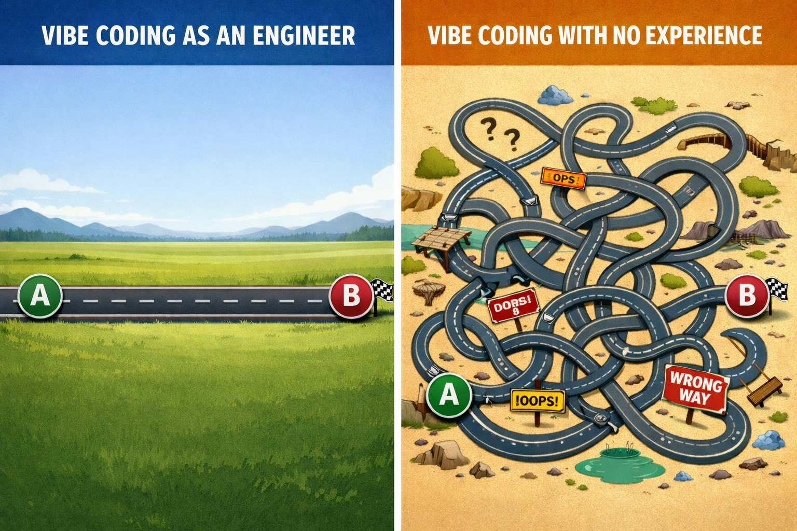
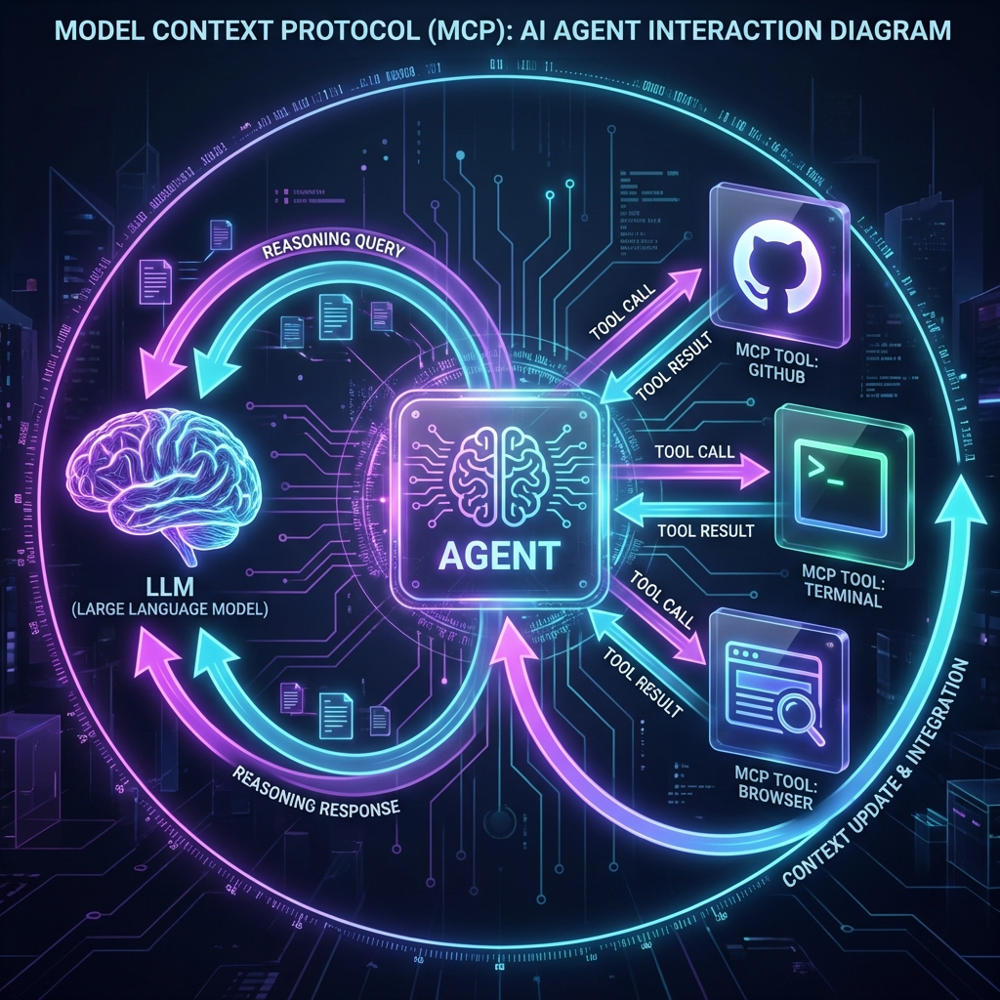
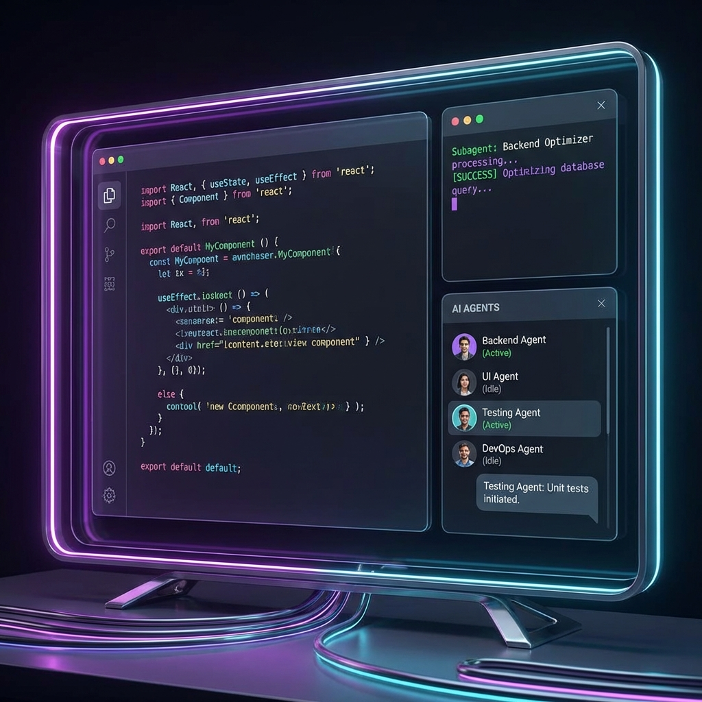
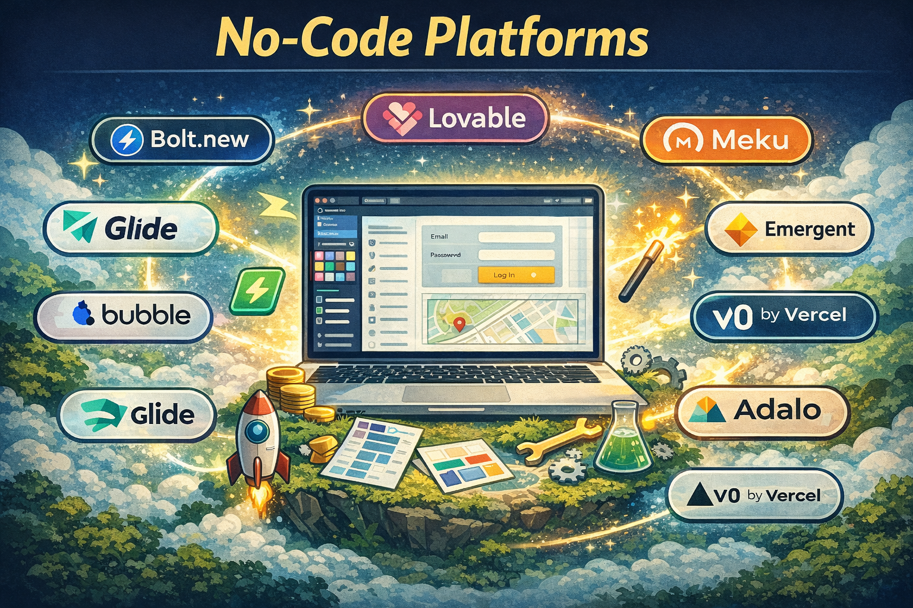

I was laid off in an AI wave.
Not because an agent replaced me directly — but because the product I worked on became less relevant once AI entered the room. Traffic dropped. Demand shifted. The ground moved.
And let’s be honest: some roles are already gone at big corps. Some call center operators, QA teams, design, content writers, translators (...)
Software engineering isn’t immune.
We probably won’t be replaced by AI agents directly. We’ll be replaced by engineers who know how to command them. At least in 2026. Beyond that? I’m not betting my house.
Since being "displaced" is just a fancy way of saying I finally have the time to actually test these tools and think, here is my take on the state of the art in 2026.
The Resistance
Many organizations must restrict AI agents due to data protection mandates, and it’s clear that traditional engineering remains a highly valuable and stable path.
I’ve chosen the opposite path: prioritizing AI-friendly roles where I can fully leverage automation, though I think it’s perfectly fair if some colleagues choose not to.
Vibe Coding Isn’t the Enemy
Vibe coding works — if the person driving it understands software fundamentals. An experienced engineer using AI can ship faster without lowering standards.
A non-technical founder can now build an MVP alone. That’s incredible. But at some point, someone who understands architecture, trade-offs, and long-term maintainability will need to step in and rebuild.

AI accelerates creation. It does not magically inject engineering judgment.
Agents
The agent ecosystem is evolving weekly.
OpenClaw, Claude, Antigravity, Cursor, VSCode + Copilot, Codex… the tooling layer is becoming an operating system for development itself.
What’s interesting isn’t just code generation. It’s context persistence and structured collaboration.
Things that actually matter in practice:
- .md files that give agents memory and project context
- Clear implementation plans stored inside the repo
- Model selection depending on task complexity
- MCP tools like GitHub and Playwright integrated directly
- Controlled reasoning effort when needed

The real power move is orchestration:
- Use a strong model to design the feature and write a detailed spec.
- Store it in the project.
- Assign each step to the appropriate model (cheap/fast vs deep/reasoning-heavy).
- Track progress step by step.
- Review before merge.
You’re not “using AI.” You’re coordinating a distributed cognitive system.
Parallelizing agents across branches is possible — and tempting. But without human architectural oversight, entropy grows fast. Rebases pile up. Context drifts.
Right now, agents generate. Humans maintain coherence. For now.
Subagents & AI Workflows
Subagents are one of the most interesting shifts in AI-native development.
You can now create specialized agents with scoped context, defined tools, and clear responsibilities — backend, testing, docs, performance — each operating like a focused expert inside your system.
It works. But it’s still evolving.
Subagents are strong task executors, not full system owners. Long-horizon architecture, subtle trade-offs, and business context still require human oversight.
The same applies to workflows around tools like Linear, Notion, or GitHub Issues. Assigning a ticket directly to Codex or Copilot works well when the task is clear. When ambiguity increases, fragility appears.
That said, the progress is undeniable — and accelerating. Memory, tool integration, and structured context are improving quickly. Teams are building increasingly automated pipelines from issue to PR.
We’re not at autonomy.
But we’re clearly in the acceleration phase.
The smart move right now isn’t full automation — it’s controlled delegation, while the boundary of autonomy keeps shifting.
And it’s shifting fast.

No-Code Platforms
No-code is not the enemy of engineering — it’s leverage.
If you don’t need highly specific, deeply customized systems, no-code platforms are incredibly powerful. For MVPs, internal tools, experimental ideas, or early-stage validation, they’re almost unfair in terms of speed.
Platforms like:
- Bolt.new – Browser-based AI builder that generates full-stack web apps from prompts with live preview and deployment options.
- Meku – AI web app builder that generates production-ready React + Tailwind code that you can export or deploy.
- Emergent – Alternative for full-stack app generation.
- Lovable – Another powerful option for rapid full-stack development.
Let you generate UI, APIs, and even deploy with minimal friction.
The trade-off? Control and long-term architectural flexibility.
For simple products: amazing. For complex, evolving systems: you’ll eventually want deeper ownership.
No-code isn’t replacing engineers. It’s lowering the entry barrier — and raising the bar for what engineers should focus on.

The Uncomfortable Question
Will we still be needed in some years? Maybe. Maybe not in the same way. Maybe not at the same scale.
Right now, the human role is coherence: defining constraints, deciding trade-offs, and owning the system as a whole. But if agents become better at long-horizon reasoning, self-correction, and architectural awareness? Then orchestration might automate itself. And the skill ceiling shifts again.
Looking Ahead
The transition from coder to system shaper is an exciting one. It’s a chance to focus on what truly matters: solving problems, designing great architectures, and building products.
Happy building, and see you in the next story!